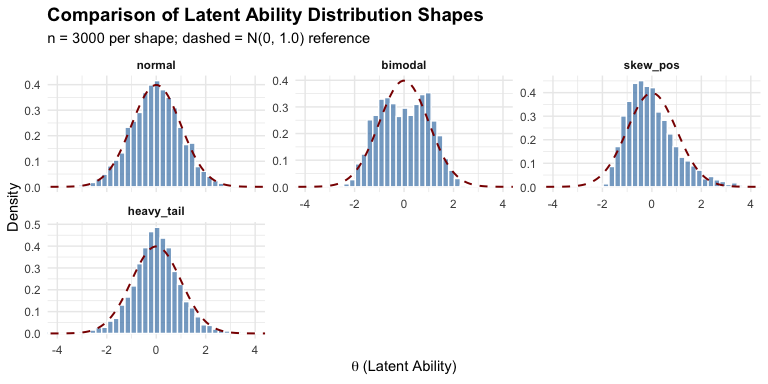

IRTsimrel is an R package for reliability-targeted simulation of Item Response Theory (IRT) data. Rather than treating reliability as an afterthought, IRTsimrel lets you specify a target marginal reliability as an explicit input and calibrates the data-generating process with explicit diagnostics.
Marginal reliability in IRT serves the same role as ICC in multilevel modeling.
Why This Matters
In Monte Carlo IRT studies, researchers routinely vary sample size, test length, and item parameters—but marginal reliability is almost never directly controlled. This leads to three problems:
| Problem | Consequence |
|---|---|
| Ecological validity | Real assessments often have –, yet simulations may implicitly generate |
| Confounded comparisons | Conclusions about estimator superiority may only hold within a narrow reliability regime |
| Limited replicability | Without reporting implied reliability, exact replication is impossible |
Just as multilevel modelers always specify the ICC, IRT simulators should always specify the target reliability. IRTsimrel makes this easy.
Installation
Install the development version from GitHub:
# install.packages("remotes")
remotes::install_github("joonho112/IRTsimrel")Quick Start
Calibrate a 25-item Rasch simulation to target average-information reliability (info / tilde) of :
library(IRTsimrel)
result <- eqc_calibrate(
target_rho = 0.80,
n_items = 25,
model = "rasch",
item_source = "parametric",
reliability_metric = "info",
M = 10000,
seed = 42
)
result
#>
#> =======================================================
#> Empirical Quadrature Calibration (EQC) Results
#> =======================================================
#>
#> Calibration Summary:
#> Model : RASCH
#> Target reliability (rho*) : 0.8000
#> Achieved reliability : 0.8000
#> Absolute error : 1.42e-07
#> Scaling factor (c*) : 0.9059
#>
#> Design Parameters:
#> Number of items (I) : 25
#> Quadrature points (M) : 10000
#> Reliability metric : Average-information (tilde)
#> Latent variance : 1.0123
#>
#> Convergence:
#> Root status : uniroot_success
#> Search bracket : [0.300, 3.000]
#> Bracket reliabilities : [0.3540, 0.9532]
#>
#> Parameter Summaries:
#> theta: mean = -0.011, sd = 1.006
#> beta: mean = -0.000, sd = 0.909, range = [-1.60, 1.73]
#> lambda_base: mean = 1.000, sd = 0.000
#> lambda_scaled: mean = 0.906, sd = 0.000Generate a response matrix and you’re ready for analysis:
sim_data <- simulate_response_data(result, n_persons = 1000, seed = 123)
dim(sim_data$response_matrix)
#> [1] 1000 25
provenance <- sim_data$provenance[c(
"metric", "calibration_status", "status_flags", "item_source"
)]
cat(sprintf("metric: %s\n", provenance$metric))
#> metric: info
cat(sprintf("calibration_status: %s\n", provenance$calibration_status))
#> calibration_status: uniroot_success
cat(sprintf("status_flags: %s\n", paste(provenance$status_flags, collapse = ", ")))
#> status_flags: uniroot_success
cat(sprintf("item_source: %s\n", provenance$item_source))
#> item_source: parametricSee the Quick Start for a 5-minute walkthrough, or the Applied Guide for the full 6-step workflow.
How It Works
IRTsimrel separates structure from scale:
- Structure — Realistic item difficulties, discriminations, and latent distributions are drawn from empirically-grounded generators.
- Scale — A single global scaling factor is calibrated so that yields the target reliability.
This means you can vary reliability independently of all other design features—just like varying ICC in a multilevel simulation.
Two Calibration Algorithms
IRTsimrel exposes two reliability metrics:
-
info/tilde: average-information reliability, bracket-checked for EQC root-finding over practical scaling ranges. -
msem/bar: MSEM-based marginal reliability, available through SAC for direct stochastic targeting.
| Algorithm | Function | Metrics | Method | Recommended For |
|---|---|---|---|---|
| EQC | eqc_calibrate() |
info, tilde
|
Deterministic root-finding (Brent’s method) | Fast default calibration when the average-information metric is appropriate |
| SAC | sac_calibrate() |
msem, bar, info, tilde
|
Stochastic approximation (Robbins–Monro) | Direct MSEM targets with convergence diagnostics, independent validation, and complex DGPs |
When both algorithms are run on the same design and metric, agreement in provides a useful calibration diagnostic.
12 Pre-Standardized Latent Distributions
compare_shapes(
n = 3000,
shapes = c("normal", "bimodal", "skew_pos", "heavy_tail"),
seed = 42
)
plot of chunk latent-shapes
All 12 built-in shapes (normal, bimodal, trimodal, skewed, heavy-tailed, uniform, floor/ceiling effects) are pre-standardized to mean 0 and variance 1. This ensures that distributional shape is cleanly separated from scale—enabling rigorous factorial manipulation.
Empirically Realistic Item Parameters
items <- sim_item_params(
n_items = 30, model = "2pl",
source = "parametric", method = "copula",
discrimination_params = list(rho = -0.3)
)Generate item parameters from four sources (parametric, IRW, hierarchical, custom). The default source is parametric so the core package works without optional data dependencies; source = "irw" is available when the Item Response Warehouse package is installed. For 2PL designs, copula and conditional methods can impose an empirically-observed difficulty–discrimination correlation such as .
Feasibility Screening
Before calibrating, verify that your target reliability is achievable and visualize the reliability–scaling curve. Feasibility reports both the average-information (info / tilde) and MSEM-based (msem / bar) reliability ranges:
check_feasibility(n_items = 25, model = "rasch", target_rho = 0.80, seed = 42)
rho_curve(n_items = 25, model = "rasch", seed = 42, plot = TRUE)Three-Level Validation
| Level | Tool | What It Checks |
|---|---|---|
| Internal |
predict(), compute_rho_both()
|
Consistency of calibrated reliability; Jensen’s gap between and |
| Cross-algorithm | compare_eqc_sac() |
Agreement between EQC and SAC on the same target, metric, and design |
| External | compute_reliability_tam() |
TAM-fitted WLE/EAP reliability on generated response data |
Documentation
IRTsimrel includes 12 vignettes organized as getting-started material, two applied/methodological tracks, and a reference article:
Getting Started
- Introduction — package overview and navigation
- Quick Start — 5-minute end-to-end workflow
Applied Researchers Track — For running simulation studies:
- Applied Guide — 6-step workflow from feasibility check to data export
- Latent Distributions — All 12 shapes with examples
- Item Parameters — Parametric, IRW, hierarchical, and custom item generation
- Simulation Design — Designing factorial Monte Carlo studies with reliability as a factor
- Case Studies — Model comparison, latent misspecification, and sample-size planning templates
Methodological Researchers Track — For understanding the theory:
- Reliability Theory — Formal reliability definitions, Jensen’s inequality, and the inverse design problem
- Algorithm 1: EQC — EQC convergence theory and diagnostics
- Algorithm 2: SAC — SAC step-size analysis and Polyak–Ruppert averaging
- Validation — Three-level validation framework
Reference
- API Reference — Complete function reference with examples